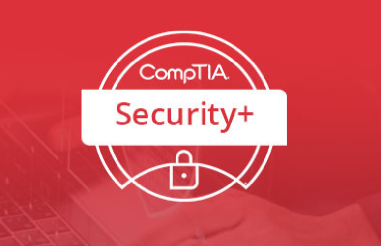
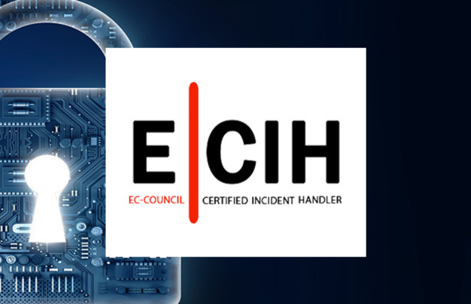

You are an ethical hacker. In fact, you are a Certified Ethical Hacker. You dream about enumeration and you can scan networks in your sleep. You have sufficient knowledge and an arsenal of hacking tools and you are also proficient in writing custom hacking code. Is that enough?
ESCA is penetration testing program that covers the tools and techiniquies you learned in the Certified Ethical HAcker course & teaches exploitation skills by applying the skills learnned in C|Eh & utilizing EC-Council’s published penetration testing methodology
Unlike most other penetration-testing programs that only follow a generic kill chain methodology; the ECSA presents
a set of distinguishable comprehensive methodologies that are able to cover different pen testing requirements across different verticals.
The new ECSAv10 includes updated curricula and an industry recognized comprehensive step-bystep penetration testing methodology.
This allows a learner to elevate their ability in applying new skills learned through intensive practical labs and
challenges.
The new ECSAv10 includes updated curricula and an industry recognized comprehensive step-bystep penetration testing methodology. This allows a learner to elevate their ability in applying new skills learned through intensive practical labs and challenges.
| Related Course | ||
|---|---|---|
| CERTIFIED ETHICAL HACKER |  CompTIA Security+ |  EC-Council Certified Incident Handler |
Ojo Contact148, Olojo Drive High Taste B/Stop, EIIT/FCMB Building, Ojo, Lagos State. |
Satelite Town ContactNo 1 Community Road Abulado Satelite Town, Lagos State. |
Lekki ContactNo 9, Otunba Adedoyin Ogungbe Crescent, Opposite ELIM Motors LekkiPhase 1, Lagos State. |